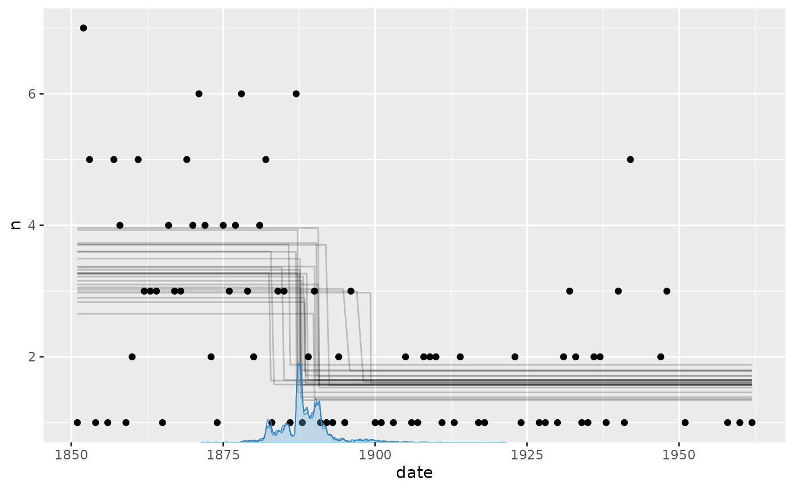
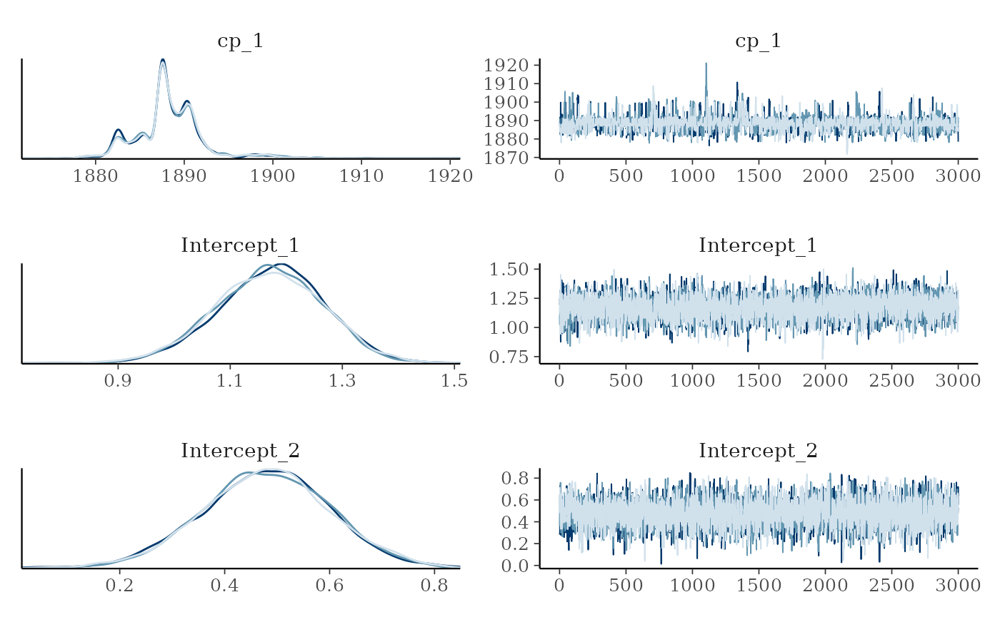
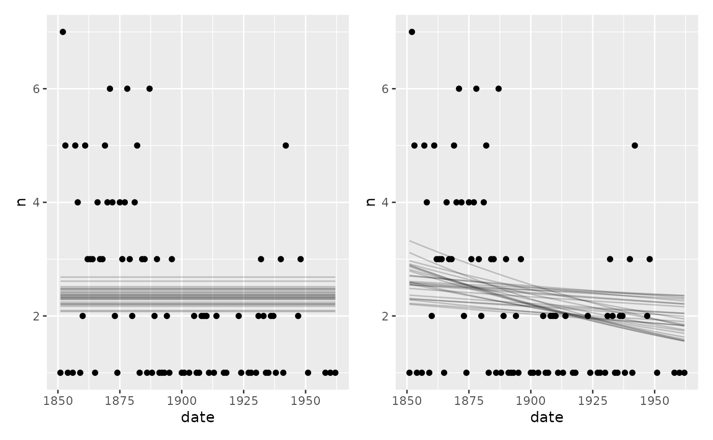

The Poisson and negative-binomial distributions model counts observed
within comparable units of time, space, or exposure. The worked example
below uses Poisson regression; a later section explains the additional
shape parameter and priors in
negbinomial().
Coal mining disasters
A dataset on coal mining disasters has grown very popular in the
change point literature (available in boot::coal). It
contains a timestamp of each coal mining disaster from 1851 to 1962. By
binning the number of events within each year (fixed time frame), we
have something very Poisson-friendly:
# Number of disasters by year
library(dplyr, warn.conflicts = FALSE)
df = round(boot::coal) %>%
group_by(date) %>%
count()
# See it
head(df)## # A tibble: 6 × 2
## # Groups: date [6]
## date n
## <dbl> <int>
## 1 1851 1
## 2 1852 7
## 3 1853 5
## 4 1854 1
## 5 1856 1
## 6 1857 5The number of events (n) as a function of year
(date) is typically modeled as a change between two
intercepts. This is very simple to do in mcp:
library(mcp)
future::plan(future::multisession, workers = 3)
set.seed(42) # Make the script deterministic
model = list(
n ~ 1, # intercept-only
~ 1 # intercept-only
)
fit = mcp(model, data = df, family = poisson(), par_x = "date")Let us see the two intercepts (lambda in log-units) and the change point (in years):
result = summary(fit)## Family: poisson(link = 'log')
## Iterations: 9000 from 3 chains.
## Segments:
## 1: n ~ 1
## 2: n ~ 1 ~ 1
##
## Population-level parameters:
## name mean lower upper Rhat ess_bulk ess_tail
## cp_1 1888.35 1881.80 1898.64 1 1876 1699
## Intercept_1 1.17 0.98 1.35 1 3833 4958
## Intercept_2 0.48 0.24 0.72 1 4192 4700We can see that the model ran well with good convergence and a large number of effective samples. At a first glance, the change point is estimated to lie between the years 1880 and 1895 (approximately).
Let us take a more direct look, using the default mcp
plot:
plot(fit)
It seems to fit the data well, but we can see that the change point probability “lumps” around particular data points. Years with a very low number of disasters abruptly increase the probability that the change to a lower disaster rate has taken place. The posterior distributions of change points regularly take these “weird” forms, i.e., not well-described by our toolbox of parameterized distributions.
We can see this more clearly if plotting the posteriors. We include a traceplot too, just to check convergence visually.
plot_pars(fit)
Priors for Poisson models
poisson() defaults to link = 'log', meaning
that we have to exponentiate the estimates to get the “raw” Poisson
parameter
.
has the nice property of being the mean number of events. So we see that
the mean number of events in segment 1 is
exp(result$mean[2]) (3.2261634) and it is
exp(result$mean[3]) (1.6143426) for segment 2.
The intercept prior is a Student-t distribution centered on the
rounded median of log(pmax(n, 0.1)), with scale equal to
the maximum of 2.5 and its rounded MAD. This follows the robust
calibration in brms; pmax() keeps zeros finite
and the minimum scale avoids a narrow prior.
Categorical contrasts use scale 2.5; numeric coefficients are scaled
to a representative predictor change. These are proper Student-t priors
where brms is flat, allowing prior sampling and mild
regularization of short segments.
cbind(fit$prior)## [,1]
## cp_1 "dunif(1851, 1962)"
## Intercept_1 "dt(0.7, 2.5, 3)"
## Intercept_2 "dt(0.7, 2.5, 3)"As always, the prior on the change point forces it to occur in the observed range. The coefficient priors are deliberately broad defaults, so update them with more informed priors for your particular case when possible, e.g.:
Negative-binomial extension
negbinomial() uses log links for both its conditional
mean mu and overdispersion shape, where
.
Its mean priors are the same as for poisson().
When no shape() formula is supplied, the response-scale
shape has an inverse-gamma(0.4, 0.3) prior, matching brms.
It covers both strong overdispersion and the large-shape Poisson limit;
fit$prior shows its log-shape representation as
dloginvgamma(0.4, 0.3).
An explicit shape() formula models log-shape. Its
intercept defaults to dt(0, 2.5, 3) and coefficients use
the usual proper scaling. brms uses the same intercept
prior but flat coefficients. Shape regression can be weakly identified,
so informed priors may be useful.
Model comparison
Despite the popularity of this dataset, a question rarely asked is what the evidence is that there is a change point at all. Let us fit two no-changepoint models and use approximate leave-one-out cross-validation to see how the predictive performance of the two models compare.
A flat model and a one-decay model:
# Fit an intercept-only model
fit_flat = mcp(list(n ~ 1), data = df, family=poisson(), par_x = "date")
fit_decay = mcp(list(n ~ 1 + date), data = df, family = poisson())
plot(fit_flat) + plot(fit_decay)
Not we compute and compare the LOO ELPDs:
loo::loo_compare(fit$loo, fit_flat$loo, fit_decay$loo)## model elpd_diff se_diff p_worse diag_diff diag_elpd
## model1 0.0 0.0 NA 3 k_psis > 0.7
## model3 -6.0 2.9 0.98 N < 100
## model2 -9.3 3.8 0.99 N < 100##
## Diagnostic flags present.
## See ?`loo-glossary` (sections `diag_diff` and `diag_elpd`)
## or https://mc-stan.org/loo/reference/loo-glossary.html.The change point model seems to be preferred with a ratio of around 1.7 over the decay model and 2.5 over the flat model. Another approach is to look at the model weights:
loo_list = list(fit$loo, fit_flat$loo, fit_decay$loo)
loo::loo_model_weights(loo_list, method="pseudobma")## Method: pseudo-BMA+ with Bayesian bootstrap
## ------
## weight
## model1 0.962
## model2 0.007
## model3 0.032Again, unsurprisingly, the change point model is preferred and they
show the same ranking as implied by loo_compare.
JAGS code for the Poisson example
Here is the JAGS code for the full Poisson change-point model above.
fit$jags_code## model {
## # mcp helper values
## cp_0 = CONST1_
## cp_2 = CONST2_
##
## # Priors for population-level effects
## cp_1 ~ dunif(CONST1_, CONST2_) # Within the observed change-point span
## Intercept_1 ~ dt(0.7, 1/(2.5)^2, 3) # Robustly centered log-count intercept with a minimum scale of 2.5
## Intercept_2 ~ dt(0.7, 1/(2.5)^2, 3) # Robustly centered log-count intercept with a minimum scale of 2.5
##
## # Model and likelihood
## for (i_ in 1:length(date)) {
## # par_x local to each segment
## x_local_1_[i_] = min(date[i_], cp_1)
## x_local_2_[i_] = min(date[i_], cp_2) - cp_1
##
## # Formula for mu
## link_mu_[i_] =
##
## # Segment 1: n ~ 1
## (date[i_] >= cp_0) * (date[i_] < cp_1) * inprod(rhs_matrix_[i_, c(1)], c(Intercept_1)) * 1 +
##
## # Segment 2: n ~ 1 ~ 1
## (date[i_] >= cp_1) * inprod(rhs_matrix_[i_, c(2)], c(Intercept_2)) * 1
##
## # Likelihood and log-density for family = poisson()
## mu_[i_] = exp(link_mu_[i_])
## n[i_] ~ dpois(mu_[i_])
## }
## }